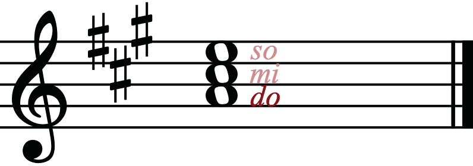
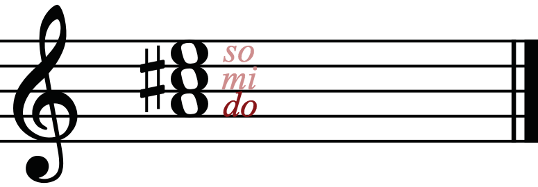
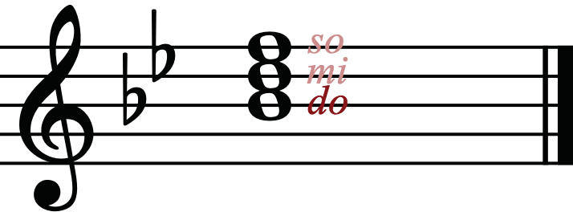
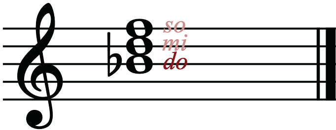

Tonic triads are constructed from the first degree (^1), that is, ‘do’ in major keys and ‘la’ in minor keys.
For example, in ‘A’ major, the tonic triad includes ‘A’ as do (the first note), C♯ as mi (the third note) and E as so (the fifth note). Figures 3.12 and 3.13 show the ‘A’ major tonic triad with and without key signature.


In B♭ major, the tonic triad includes B♭ as do (the first note), D as mi (the third note) and F as so (the fifth note). Figures 3.14 and 3.15 show the B♭ major tonic triad with and without a key signature.

